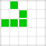
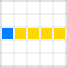

Autômato celular representado em um plano bidimensional que considera todas as células
adjacentes para seu desenvolvimento.
 Autômato celular representado em um plano unidimensional na qual considera somente células
superiores para seu desenvolvimento.
Autômato celular representado em um plano unidimensional na qual considera somente células
superiores para seu desenvolvimento.

Autômato celular com conceitos de eletrônica digital para simulação de portas lógicas e
resultados binários.
A simulação pode ficar lenta quando selecionado muitos quadros